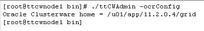
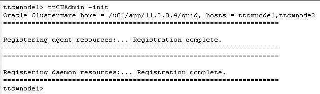
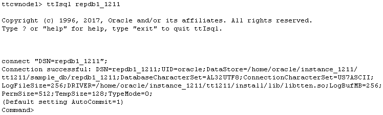
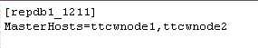
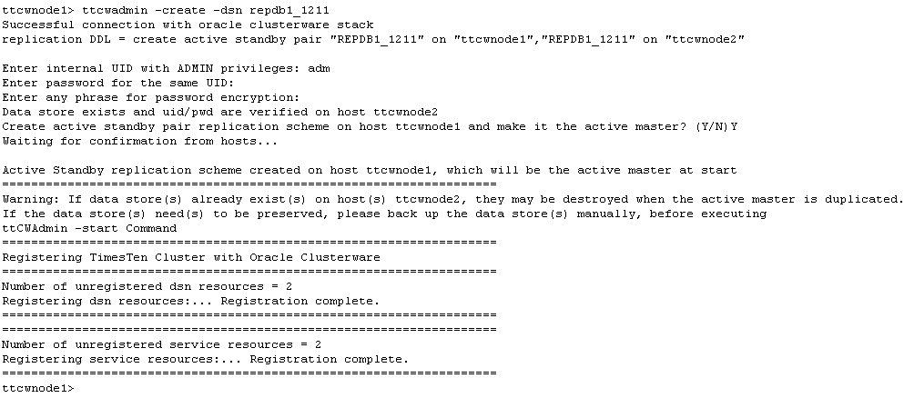
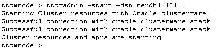

with TimesTen In-Memory Database and Clusterware
This tutorial will make use of the DSN repdb1_1211. The hostnames of the two machines in the examples are ttcwnode1 and ttcwnode2. The active database will be created in ttcwnode1 and the standby database in ttcwnode2.
The following tasks are required to configure an Active Standby pair with Oracle Clusterware and TimesTen In-Memory Database:
1. Register the TimesTen Instance Information
TimesTen instance information is stored in the Oracle Cluster Registry. As the root user on UNIX or Linux platforms, register the TimesTen instance information by executing the ttCWAdmin -ocrConfig command on any one of the hosts (ttcwnode1 or ttcwnode2).
ttCWAdmin -ocrConfig

2. Start the Cluster Agent
Start the TimesTen cluster agent by executing the ttCWAdmin -init command on any one of the hosts. This command starts the TimesTen clusterware agents and TimesTen daemons on all nodes and starts monitoring them. For example on ttcwnode1:
ttCWAdmin -init

3. Create a database
In order to set up an Active Standby Pair via ttCWAdmin, you need to define an "active" TimesTen database on one of the hosts.
This database must include a user with the ADMIN
privilege and an application user with some objects to be used for replication.
Define a system DSN on the active master host as the instance administrator.
In this example we will use a system DSN repdb1_1211 on host ttcwnode1. ttcwnode1 will function as the active database in the active standby pair managed by Clusterware. For Clusterware-managed replication, the database DSN must be the same as the database file name. Here is the example of DSN definition for the relevant section in ttcwnode1's sys.odbc.ini file:
[repdb1_1211]
Driver=/home/timesten/instance/tt181/install/lib/libtten.so
DataStore=/home/timesten/instance/tt181/sample_db/repdb1_1211
PermSize=512
TempSize=128
LogBufMB=256
LogFileSize=256
DatabaseCharacterSet=AL32UTF8
Note: On the other host (ttcwnode2), an identical system DSN (i.e. [repdb1_1211]) and database file name (i.e. repdb1_1211) must also exist. This is used during the creation of the standby database on ttcwnode2.
Connect to the repdb1_1211 database from the active node (ttcwnode1) using ttIsql as the instance administrator.
ttIsql repdb1_1211

Refer to the section Setting up Data Source Name for more information on how to define your own DSNs.
4. Create a user to administer the active standby pair
Create a database user and assign that user privilege as the database and replication administrator by granting the user the admin privilege. This admin user is responsible for setting up and managing the active standby pair.
create user adm identified by adm;
grant admin to adm;
Create an application user and tables in the database. In this example, we will create an application user called appuser and this user will own the customers and orders tables.
create user appuser identified by appuser;
grant create session, create table to appuser;
Log in as the user appuser in ttIsql and execute the following statements or run the script create_appuser_obj.sql located in the <QUICKSTART_HOME>/sample_scripts/replication directory to create the two tables in the appuser schema.
ttIsql
connect "dsn=repdb1_1211;uid=appuser";
Run the create_appuser_obj.sql script:
@<QUICKSTART_HOME>/sample_scripts/replication/create_appuser_obj.sql;
Or run the following code:
CREATE TABLE CUSTOMERS (
CUST_NUMBER NUMBER,
FIRST_NAME VARCHAR2(12) NOT NULL,
LAST_NAME VARCHAR2(12) NOT NULL,
ADDRESS VARCHAR2(100) NOT NULL,
PRIMARY KEY (CUST_NUMBER));insert into customers values (3700,'Peter','Burchard','882 Osborne Avenue, Boston, MA 02122');
insert into customers values (1121,'Saul','Mendoza','721 Stardust Street, Mountain View, CA 94043');CREATE TABLE ORDERS (
ORDER_NUMBER NUMBER NOT NULL,
CUST_NUMBER NUMBER NOT NULL,
PROD_NUMBER CHAR(10) NOT NULL,
ORDER_DATE DATE NOT NULL,
PRIMARY KEY (ORDER_NUMBER),
FOREIGN KEY (CUST_NUMBER) REFERENCES CUSTOMERS (CUST_NUMBER));insert into ORDERS values (6853036,3700,'0028616731',to_date('2008-04-05','yyyy-mm-dd'));
insert into ORDERS values (6853041,3700,'0198612510',to_date('2009-01-12','yyyy-mm-dd'));
insert into ORDERS values (6853169,1121,'0003750299',to_date('2008-08-01','yyyy-mm-dd'));
insert into ORDERS values (6853174,1121,'0789428741',to_date('2008-10-25','yyyy-mm-dd'));
insert into ORDERS values (6853179,1121,'0198612583',to_date('2009-02-02','yyyy-mm-dd'));


5. Create the TimesTen cluster.oracle.ini configuration file
Although there are many possible attributes in a cluster.oracle.ini file, for a basic Active Standby pair configuration,
only the MasterHosts attribute is needed.
The cluster.oracle.ini file is in the <TIMESTEN_HOME>/conf directory.
The cluster.oracle.ini entry name (eg [repdb1_1211]) must correspond to the system DSN for the active and standby databases.
Note: When you use the installer or ttInstanceModify to add support for Oracle Clusterware, the mandatory MasterHosts attribute will be created in the cluster.oracle.ini file for you. For more complex configurations, you need to add the relevant attributes yourself in the cluster.oracle.ini file on every node in the cluster.
6. Create an Active Standby Pair
Drop any existing [SQL] Active Standby pair for the repdb1_1211 database by running the following command:
drop active standby pair;
You cannot mix Active Standby Pairs managed by ttIsql and managed by ttCWAdmin.
An Active Standby Pair for a database should be managed by either ttIsql or by ttCWAdmin, and not by both.
- Create an Active Standby pair replication scheme by executing the ttCWAdmin -create command on any host. For example on ttcwnode1:
ttcwadmin -create -dsn repdb1_1211

Based on the repdb1_1211 entries in the system DSN and the cluster.oracle.ini, this command created the replication scheme for the repdb1_1211 database on the ttcwnode1 and ttcwnode2 hosts, with ttcwnode1 as the active node.
7. Start the Active Standby Pair
Start the Active Standby pair replication scheme managed by ttCWAdmin by executing the ttCWAdmin -start command on any host. For example on ttcwnode1:
ttcwadmin -start -dsn repdb1_1211

Notes:
- ttCWAdmin -start will automatically start the replication agent on the standby machine and duplicate the active database onto the standby host.
- The time it takes to duplicate the active database will be proportional to the size of the active database and the performance of the hardware used.
- Once the Active Standby Pair has be started by ttCWAdmin, committed writes to the active database will be written to its local transaction logs, but they will not get replicated to the standby database until the duplicate operation is complete.
- To check the progress of the database duplication, use the ttCWAdmin -status -dsn <your_DSN> command.
Click here to learn how to manage the Active Standby Pair with TimesTen In-Memory Database and Clusterware.
For more information about Using Oracle Clusterware to Manage Active Standby Pairs refer to the documentation here